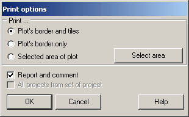

What to print?
| · | The outlines of the plot and tiles. You will get printed the plot, tiles of all colors, and the texture. This may require a considerable amount of the ink or toner. A more saving way is to print:
|
| · | Only the outline of the plot. You will get printed only the outline of the plot without tiles and texture. Another reason that can prompt you to use this option is the size of the plot area. If your plot area is large, tiles will be so small that their outline will form a solid black background.
|
Another option available is Report and comments. Tick this checkbox to have the report and comment printed on the back of the sheet.